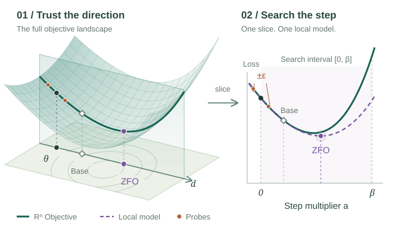

Your optimizer picks
the direction.
ZFO picks the step.
Keep the update rule you know. Explore how Taylor and Padé models can choose how far to move with code and experiments you can inspect.
FROM LANDSCAPE TO LINEnD → 2D

A few settings.
Your existing training loop.
Wrap an optimizer, pass a fixed-batch loss, and keep your usual learning-rate scheduler. Data loading and batch size stay in your code.
Same direction.
A better-sized step.
Your optimizer points the way. ZFO looks along that line and chooses how far to go.
θnext = θ + s z
- z
- The directionYour optimizer gives a direction g. Use its unit direction z.
- s
- The distanceZFO chooses how far to move along z, with 0 ≤ s ≤ R.
- R
- The limitThe usual step is sFO = α‖g‖. ZFO can search up to R = β sFO.
β sets how far ZFO can search relative to the usual first-order update. Values above 1 let it look beyond that update.
A LOOK ALONG THE LINEφ(s) = F(θ + s z)
TRY A FUNCTION
See the fit.
Compare the steps.
Start at any x. Give ZFO a function and see how four local models choose the next point.
Along your next step
Solid curve: your function. Dashed curves: local fits. Dots: actual values at the selected points. Select a method below to highlight its fit.